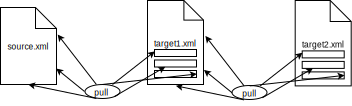
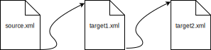
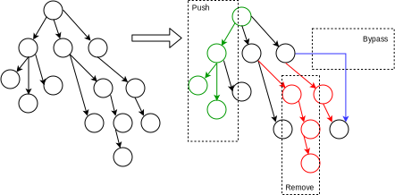

Push vs. Pull Stylesheets
XSLT ist eine ereignisgesteuerte,[[xe1:Konzepte;xe2:Push vs. Pull]] regelbasierte Umgebung zur Konvertierung von XML Daten. Gerade der Vorteil des regelbasierten Ansatzes ist vielen Entwicklern nicht bewusst, und es entsteht Quellcode der aussieht, wie mit XPath angereicherter PHP Code.
Wieso nimmt man dann überhaupt XSLT, wenn man keine Template-Match Regeln verwendet, oder nur spärlich verwendet?
Um diesen Umstand aufzuklären ist ein bisschen Theorie notwendig:
Beim "Pull" werden Elemente in der Quellinstanz selektiert und an einer passenden Stelle in der Zielinstanz eingefügt. Diese Vorgehensweise ist vergleichbar mit derer von Template-Engines, wie JSP oder ASP. Das kann in mehreren Stufen erfolgen, bis schrittweise die Quellinstanz in die finale Zielinstanz überführt wurde.
Pull Stylesheet
Beim "Push" werden die Quelldaten schrittweise in die Zieldaten konvertiert. Diese Vorgehensweise kann explorativ erfolgen und beim Transformieren in einen Zwischenschritt entstehen Erkenntnisse, die bei der Weiterverarbeitung nützlich sind. Merke:XSLT steht für eXtensible Stylesheet Transformation.
Push Stylesheet
Das bisher Gesagte verdeutlicht zwar den "Pull" Ansatz, was genau aber ge"pusht" wird, ist vermutlich noch unklar. Betrachten wir XML in der Baumdarstellung.
Der XSLT Prozessor unternimmt einen Tiefensuchlauf[[xe1:Tiefensuchlauf]] und überprüft bei jedem Knoten den er betritt, ob in seiner Regelbasis eine Regel existiert, die auf diesen Knoten "matched". Dabei gibt es drei grundsätzliche Möglichkeiten, wie die Knoten des Quellbaums in den Zielbaum kopiert - oder eben nicht kopiert - werden können.
Transformation des Quellbaums in den Zielbaum
Remove | Beim Betreten einer leeren Match-Regel wird ein Teilbaum nicht kopiert |
Bypass | Beim Betreten einer Match-Regel ohne Kopieranweisung wird der Knoten übersprungen |
Push | Durch gezielte Auswahl einer Knotenmenge auf der Descendant-Achse wird der XSLT Prozessor in eine bestimmte Richtung ge"pusht". |
Pull-Stylesheets werden gewöhlich mit for-each Loops programmiert. Dieser Ansatz ist meiner Ansicht nach gebräuchlich, wenn keine großen DTD Änderungen zu erwarten sind, der XML Baum flach strukturiert ist und die Anforderungen an die Knvertierung relativ einfach sind, bspw. beim Auswerten / Konvertieren von Konfigurationsdateien. In alles anderen Fällen sind Push-Stylesheets vorzuziehen, d.h. möglichst wenige for-each loops und möglichst viele Template-Match Regeln.